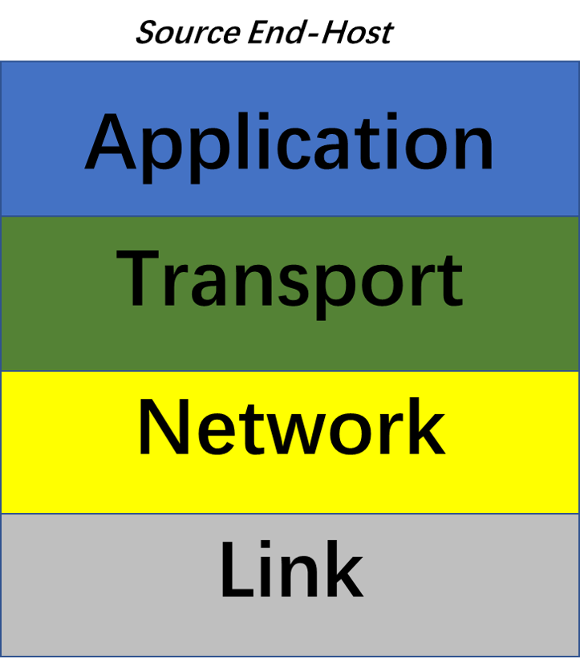
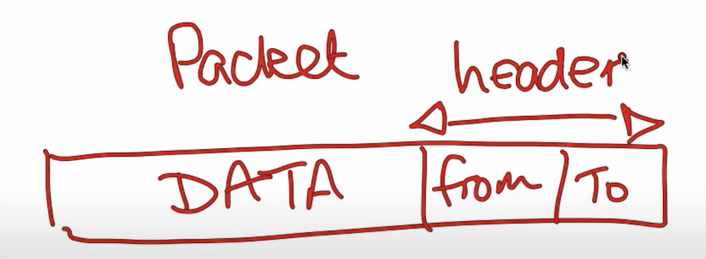
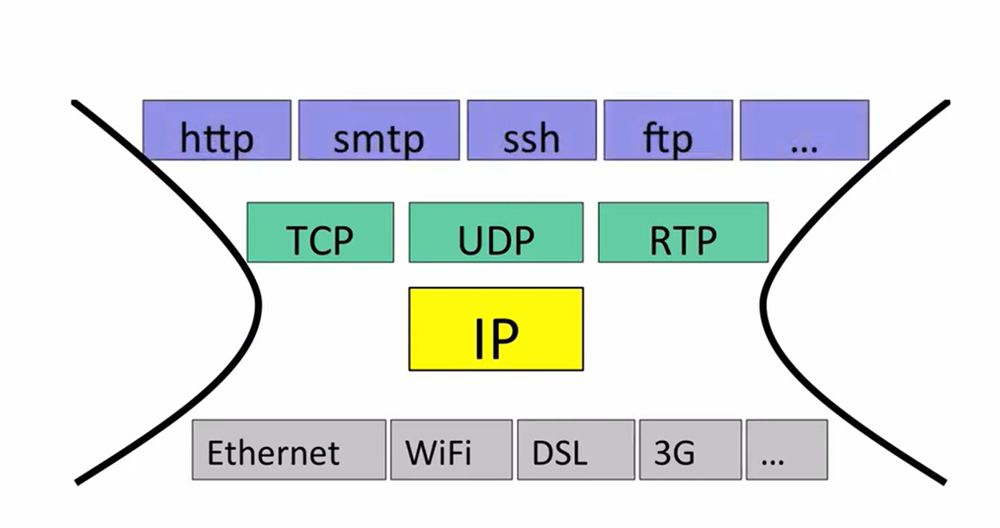
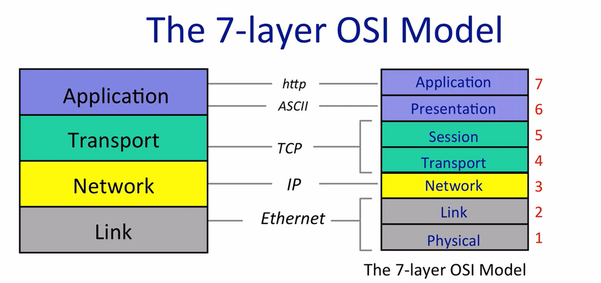
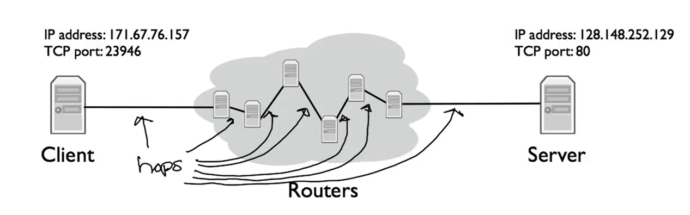

cs144-note1
本文最后更新于：7 个月前
Computer Network
introduction
dominant model : bidirectional, reliable byte stream connection
-
http: hypertext transfer protocol : designed to be a document centric way for programs to communicate.
Client —> Server model -
Bit-Torrent: (peer-to-peer model) a client requests document from other clients, a single client can request from many others.
these collections of collaborating clients are called swarms
when a client wants to downloads a file, it first findtorrent, usually using www and download using http.
torrent file describes information about data file, also tells bit-torrent about the tracker (a node keeps track names of clients of the swarm) -
skype: client <–NAT–>client two clients request data from each other
NAT : network address translator
if you’re behind a NAT, you can open connections out to the internet, but other nodes on the internet can’t easily open connections to you.
The 4 layer Internet Model
Network layer and link layer
 The Internet is made up of `event hosts`, `links` and `routers`.data is delivered in packets
a packet is a self-contained unit consisting of the data we want to be delivered.
link layer’s job is to carry the data over one link at a time.
ethernet and wifi --> two examples of different links layers
Network layer’s job is to deliver packets end to end across the internet.
a packet is a collection data with header.

network layer packet are called datagram.

The network layer is “special”
we must use the internet Protocol (IP)
- IP makes a best-effort attempt to deliver our datagrams to the other end. But it make no promise
- IP datagrams can get lost, delivered out of order, and be corrupted. No guarantees.
Transport layer
the most common transport layer is TCP (transmission control protocol)
- guarantee correct in-order delivery of data
some applications doesn’t need reliable delivery, it can use UDP (user datagram protocol).
- an alternative transport layer that bundles up application data and hands it to the network layer
- it offers no delivery guarantees at all
Application
they have their own protocol to define the syntax and semantics of data flowing between two end points
(e.g. http, bit-torrent)
others
 IP Service model
| Property | behavior |
|---|---|
| Datagram | Individually routed packets. |
| Unreliable | packet might be dropped |
| Best effort | only if necessary |
| Connectionless | No per-flow state. |
IP is "simple"
- faster, lower cost to build and maintain
- The end-to-end principle
- allows a variety of reliable (or unreliable) service to be built on top
- make very few assumptions about link layer
IP Service Model
- Tried to prevent packets looping forever
add a hop count field in the header of every datagram (ttl:time to live), start at a number like 128, decremented by every router passes through, when it reaches 0, IP think it be stuck in a loop then drop it. - will fragment packets if they are too long.
bc most links have a limit on the size of packets.(ethernet – 1500bytes) - uses a header checksum to reduce chances of delivering datagram to wrong destination.
- allows for new version of IP
- IPv4 32 bit addresses
- IPv6 128 bit addresses
- allows for new options to be added to header
Life of a Packet
three-way handshake
-
Client -----sends a synchronized message(同步信息)-----> Server (synchronize, SYN)
-
Server -----responds with a synchronized message and also acknowledges the client synchronize----> Client (synchronize and acknowledge, SYN/ACK)
-
Client -----responds by acknowledging the server synchronized ----> Server (acknowledge, ACK)
IP addressed: like computer addresses.
TCP port: tells which applications to deliver data to.
Web Server usually run on tcp port 80.

本博客所有文章除特别声明外，均采用 CC BY-SA 4.0 协议 ，转载请注明出处！